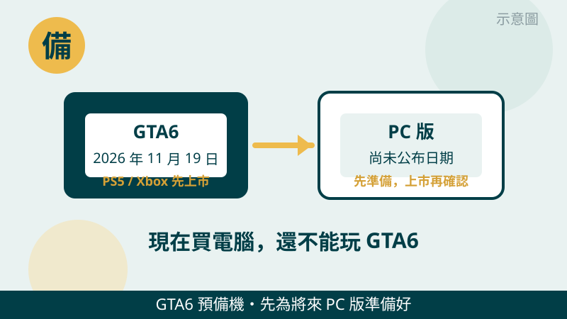
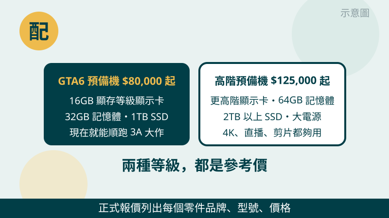

組新電腦最怕兩件事：規格看不懂、配完才發現不合用。我們的流程反過來：先問用途，再配零件。您只要說平常怎麼用電腦、預算大概多少，剩下的交給我們；正式報價列出每一個零件的品牌、型號和價格，總價一併給您確認，讓您自己比價。
組新機報價透明，正式報價列出每一個零件的品牌、型號和價格，讓您自己比價；每台依用途配，價格隨零件行情變動，頁面價錢都是參考價，傳 LINE 聯繫我們，詳談需求後再報價給您確認。
用途先傳給我們看
把平常怎麼用電腦、預算大概多少傳 LINE 給我們，我們先免費幫您評估，再報價給您確認。
組新機服務流程（五步配好交到您手上）
- 1. 用途溝通：先說您平常怎麼用電腦。上網、文書、玩遊戲、剪片，還是跑本地 AI，預算大概多少，有沒有舊零件想沿用。您不用懂規格，說用途就好，我們再跟您確認細節。
- 2. 報價確認：正式報價列出每一個零件的品牌、型號和價格，總價一併給您確認，讓您自己比價。您確認沒問題，我們再動手，沒確認前不會先買零件。
- 3. 組裝整線：零件到齊後，組裝並把線路整理好。線路整理整齊，留好散熱空間，確認每個零件都裝妥、接好。整線不只好看，也讓日後清潔與升級更方便。
- 4. 燒機測試：組好後先開機測試，穩定了再交機。檢查能不能正常開機、運作穩不穩定，確認沒問題才安排交機。有狀況先在這一步處理好，不會留到您手上。
- 5. 交機驗收：約時間交機，現場開機給您驗收。確認沒問題再交給您，也教您基本使用，有問題再問我們就好。交機時間配合您的方便，假日也可以約。
用途溝通
先說用途
報價確認
明細比價
組裝整線
組裝＋整線
燒機測試
穩定再交
交機驗收
現場驗收
流程圖示意
拉一下預算，看看能組到什麼
預算拉到哪，就做到哪。預算越高，能做的事往上加，下面的功能都還在。先拉拉看，再傳 LINE 跟我們說預算，我們配好再報價給您確認。
我的預算
$20,000 起
文書機
再加 $35,000，就能升級到遊戲機（$55,000 起）
金色＝這一級新解鎖的功能，深色＝已經包含的功能
💡 下面每個方案都有傳 LINE 按鈕，訊息已幫您打好，手機點開後直接按傳送就好；電腦版請把訊息複製再貼到 LINE。
文書機：上網、文書、追劇、輕度使用
- 上網、文書、追劇都順暢
- 寫報告、上網課、查資料都夠用
- 開機與開程式不用久等
- 安靜省電，適合長時間使用
- 輕度使用為主，配得剛好
例如配法：i3-14100／Ryzen 3、16GB DDR4、500GB SSD （實際依報價為準）
$20,000 起
參考價，實際依零件行情報價；正式報價列出每個零件的品牌、型號和價格，可自己比價
遊戲機：順跑主流遊戲、留升級空間
- 順跑主流遊戲，畫面流暢
- 讀取與載入快，不用久等
- 之後想升級，還有空間
- 長時間玩遊戲也穩定
例如配法：i5-14400F／Ryzen 5、RTX 5060、32GB DDR4、1TB SSD （實際依報價為準）
$55,000 起
參考價，實際依零件行情報價；正式報價列出每個零件的品牌、型號和價格，可自己比價
GTA6 預備機（遊戲機等級）：現在順跑 3A 大作，將來等 PC 版
- 顯示卡 16GB 顯存等級，現在玩 3A 大作畫面流暢
- 32GB 記憶體，多開遊戲、瀏覽器也不卡
- 1TB 高速 SSD，遊戲讀取與載入快
- 電源與散熱留餘裕，長時間玩遊戲也穩定
- 之後想升級，還有空間
例如配法：i5-14400F／Ryzen 5、RTX 5060 Ti 16GB、32GB DDR5、1TB SSD （實際依報價為準）
$80,000 起
參考價，實際依零件行情報價；正式報價列出每個零件的品牌、型號和價格，可自己比價

剪片直播機：剪片、直播、轉檔、多工處理
- 剪片、轉檔速度夠用
- 同時開多個軟體，多工更順
- 大檔案讀寫不用久等
- 預覽與輸出都順暢
例如配法：i7-14700K／Ryzen 9、RTX 5060 Ti 16GB、64GB DDR5、2TB SSD （實際依報價為準）
$110,000 起
參考價，實際依零件行情報價；正式報價列出每個零件的品牌、型號和價格，可自己比價
高階預備機：4K、直播、剪片，將來 PC 版也夠用
- 更高階顯示卡，4K 畫面、直播、剪片都夠用
- 64GB 記憶體，同時開多個軟體，多工更順
- 2TB 以上高速 SSD，大檔案讀寫不用久等
- 大電源、散熱留餘裕，長時間高負載也穩定
例如配法：i7-14700K／Ryzen 9、RTX 5070 Ti、64GB DDR5、2TB SSD （實際依報價為準）
$125,000 起
參考價，實際依零件行情報價；正式報價列出每個零件的品牌、型號和價格，可自己比價

本地 AI 主機：自己的 AI 助理，資料留在自己電腦裡
想在公司或家裡跑自己的 AI 助理，又不想把客戶資料傳上雲端，本地 AI 主機就是為這個需求配的。模型跑在您自己的電腦裡，文件與對話留在本機，不上傳雲端。平常可請它問答、整理文件、寫客服回覆草稿、分析資料，全部在本機完成；要對外發送前，請您人工確認一次。詳細說明：台中本地 AI 主機怎麼配？
- 適合誰：店家、工作室、辦公室，想用 AI 又怕客戶資料外流
- 能做什麼：本地問答、整理文件、客服草稿、資料分析，繁體中文為主
- 重點規格：大 VRAM 顯卡、大記憶體、大容量 SSD，VRAM 決定跑起來的速度
- 最大賣點：資料留在自己電腦，不上傳雲端，不用綁月費
- 安裝方式：預約到府安裝，現場開機測試，教您基本使用
例如配法：i9-14900K／Ryzen 9 9950X、RTX 5080、128GB DDR5、2TB SSD （實際依報價為準）
$200,000 起
參考價，依顯卡與記憶體規格而定，實際依零件行情報價；正式報價列出每個零件的品牌、型號和價格，可自己比價
GTA6 預備機：先為將來 PC 版準備好，現在就能順跑 3A 大作
最重要的一件事：現在組電腦，還不能玩 GTA6。GTA6 在 2026 年 11 月 19 日先上 PS5 和 Xbox，PC 版尚未公布日期；照 GTA5 的慣例，PC 版通常晚 1 到 1.5 年，我們不承諾 PC 版上市日期。GTA6 預備機的意思是：先把一台夠力的電腦準備好，現在就能順跑其他 3A 大作，等 PC 版上市、官方規格公布後，再依當時規格確認。現在就想玩 GTA6，建議先用 PS5，我們也有 PS5 擴充 SSD 教學，裝了 212GB 的 GTA6 也不怕容量不夠。
相關頁面：GTA6 台中 PS5 容量不夠怎麼辦？212GB 擴充 SSD 教學
提醒您：文書機 $20,000 起是上網、文書、追劇用的，玩 3A 大作會不夠力，不適合當 GTA6 預備機。不確定適合哪一級，把平常玩的遊戲、想玩的解析度傳 LINE 給我們，我們先免費幫您評估，再報價給您確認。
交機驗收：現場開機給您看，教您基本使用
交機不是把電腦放下就走。我們現場開機給您驗收，確認開機正常、您要用的功能都沒問題，再交給您。也教您基本使用，像是怎麼開機、關機，常用的東西放在哪裡，讓您回家就能直接用。有問題再問我們就好，不用自己摸索。
先跟您說明
- 可開立統一發票
- 服務台中全區、彰化部分地區（市區、和美、花壇）
- 營業時段：平日 20:00–24:00、假日 06:00–24:00，全預約制
- 自備零件請先提供型號，我們先確認相容；零件本身不保固
- 到府交機車馬費自南屯出發，依 Google 導航時間計算，10 分鐘內 $200、超過每 10 分鐘 +$100；車馬費寫在報價明細裡
常見問題
組一台新電腦大概要多少錢？
看您的用途和零件行情：文書機 $20,000 起、遊戲機 $55,000 起、剪片直播機 $110,000 起、本地 AI 主機 $200,000 起（依顯卡與記憶體規格而定）、GTA6 預備機 $80,000 起、高階預備機 $125,000 起（以上皆參考價，實際依零件行情報價）。傳 LINE 聯繫我們，詳談需求後再報價，正式報價列出每一個零件的品牌、型號和價格，可自己比價，確認後再決定。
組一台 GTA6 預備機，現在就能玩 GTA6 嗎？
還不能。GTA6 在 2026 年 11 月 19 日先上 PS5 和 Xbox，PC 版尚未公布日期，照 GTA5 的慣例，PC 版通常晚 1 到 1.5 年，我們不承諾 PC 版上市日期。GTA6 預備機是先為將來 PC 版準備好，現在就能順跑其他 3A 大作，等 PC 版上市、官方規格公布後，再依當時規格確認。傳 LINE 聯繫我們，詳談需求後再報價，正式報價列出每一個零件的品牌、型號和價格，可自己比價。
本地 AI 主機大概要多少錢？資料真的不會上傳嗎？
本地 AI 主機 $200,000 起，是參考價，實際依顯卡與記憶體規格而定；傳 LINE 聯繫我們，詳談需求後再報價，正式報價列出每一個零件的品牌、型號和價格，可自己比價，確認後再決定。資料方面：AI 模型跑在您自己的電腦裡，文件與對話留在本機，不上傳雲端；要對外發送前，我們會提醒您先人工確認。
我自己有零件，可以請您幫忙組嗎？
可以。請先把零件型號提供給我們，我們先確認彼此相不相容，再報價給您確認。自備零件本身不保固，報價一樣列出每個零件的品牌、型號和價格讓您自己比價，傳 LINE 聯繫我們，詳談需求後再報價給您確認。
組好之後怎麼交機？有問題怎麼辦？
交機時我們現場開機給您驗收，確認沒問題再交給您，也教您基本使用，有問題再問我們就好。服務台中全區、彰化部分地區（市區、和美、花壇），營業時段平日 20:00–24:00、假日 06:00–24:00。